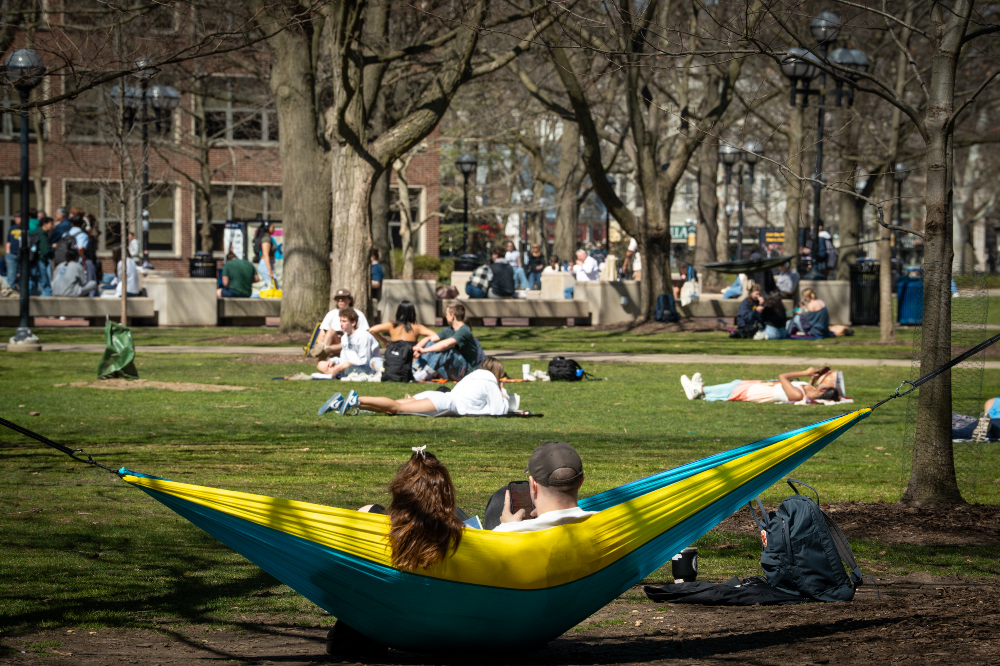

A Peaceful Area & Delicious Food on Campus
Finding balance with so much to handle can be difficult. Here is some information on a peaceful location and food locations on campus.
Peace in the Diag
Actively engaging with natural environments, like parks, forests, or even a backyard, can have numerous positive effects on mental and physical health.
Flowers in the Diag
The Diag’s beautiful flowers create a peaceful and visually soothing environment for students.

A landscaped area in the Diag at the University of Michigan, featuring a circular flagpole surrounded by bright purple flowers on a cloudy day.
Shade in the Diag
The shade under trees in the Diag provides a perfect spot for relaxation and casual gatherings.

A tree with vibrant red and orange autumn leaves in the Diag, with students sitting on the grass beneath it.
Sunny Days in the Diag
On sunny days, the Diag becomes a great spot where students can relax and unwind in the grass.
Students enjoy a nice day by relaxing in the grass of the Diag.
Food Spots
Eating tasty food boosts happiness, strengthens social connections, encourages mindful enjoyment, and adds variety to your diet.
Dining Halls
U-M dining halls offer festive Thanksgiving meals, creating opportunities for students to connect and celebrate together.

A picture of East Quad Thanksgiving 2024.
Alumni Center
The Alumni Center provides fresh fruit cups to promote healthy snacking options for students.

Students pick up fruit cups at the Alumni Center.
Alumni Center - Welcome Wednesdays
The Alumni Center hosts Welcome Wednesdays, where students receive bagels and other treats as a warm gesture of support.

Bagel stickers given out during Welcome Wednesdays.